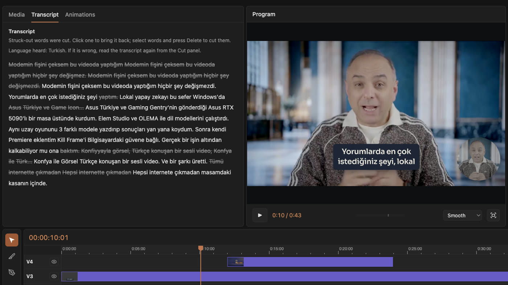
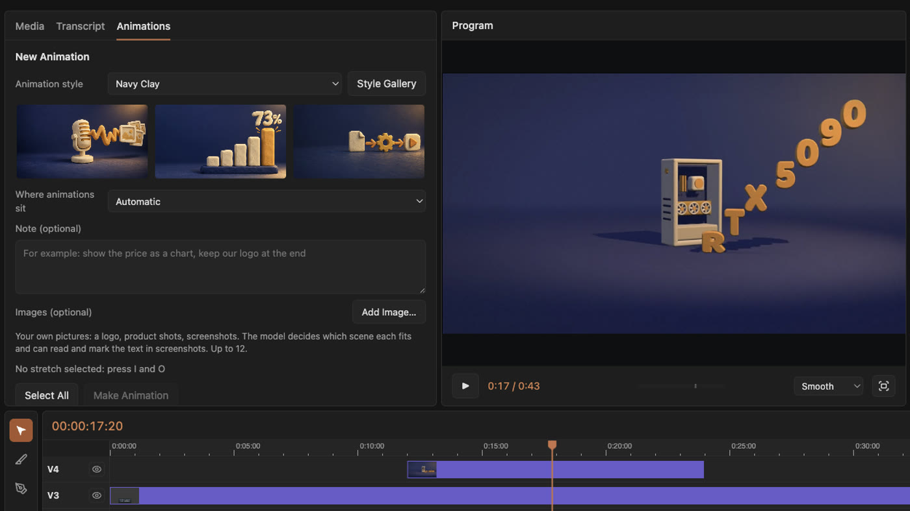
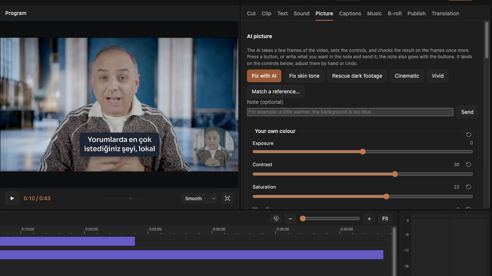
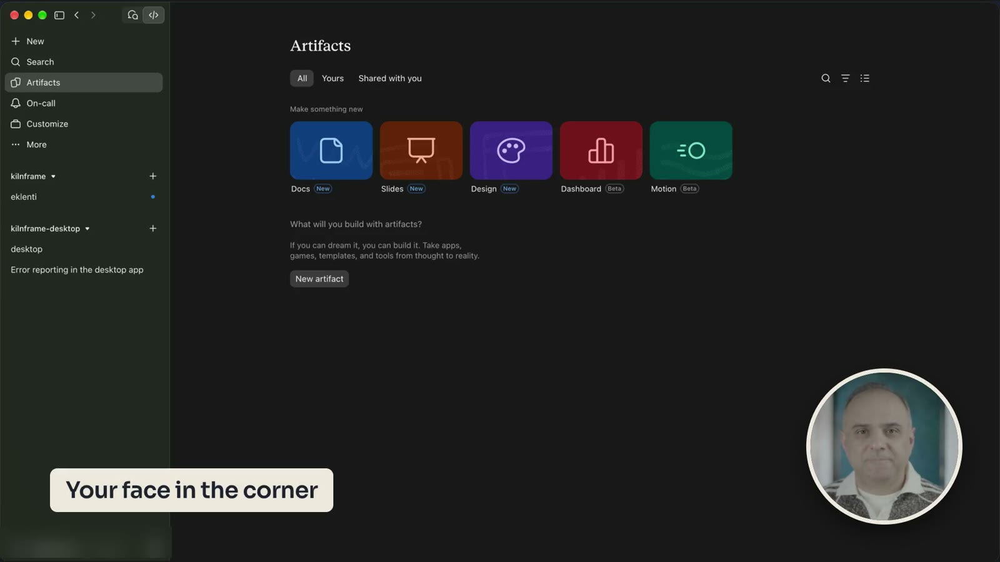
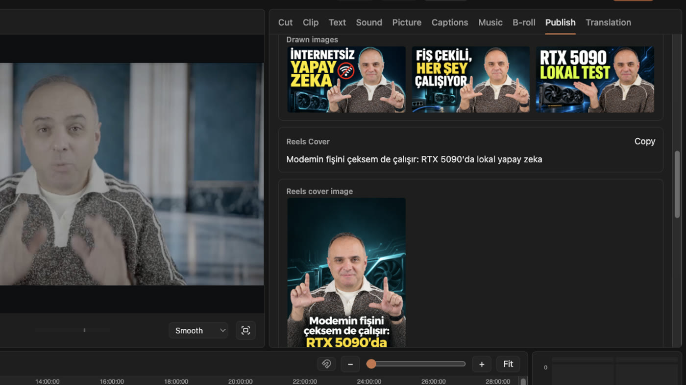

Talk to the camera.
Get a finished video.
Kilnframe Desktop reads your recording, cuts the pauses and the takes you said twice, writes animations for what you say, sets the picture and the sound, and makes captions, Shorts and thumbnails. You keep the last word on all of it.
The work after the recording, done for you.
Every step is shown where it happened, and every one can be changed or undone.
It cuts for you.
Your speech is transcribed on your own computer. Pauses, ums and the sentences you said twice are found and cut; the ones it is unsure about, it asks you.
Delete a word in the transcript, and it is cut from the video.
Say a word wrong? Type it, and it is read again in your voice.
It writes the animations.
Pick a range and Kilnframe writes titles, charts and scenes for what you are talking about, in 3D, particles, hand-drawn lines or kinetic type.
More than 100 tested styles, each with its own sounds, timed to the frame.
One click for colour and sound.
AI colour fixes skin tones, rescues dark footage, gives a cinematic or vivid look and matches two cameras. Noise removal, loudness for YouTube and a mixer, track by track.
Curves, LUTs and every control by hand, when you want them.
Made for lessons on screen.
Lines up your screen recording and your camera by their sound, and puts your face in the corner. Zooms in where you type and open menus.
Installs and loading are sped up instead of cut.
Ready to post.
Captions in a click, translation into other languages, vertical Shorts and Reels from the strongest moments, titles, chapters, thumbnails and a Reels cover with its text.
Exports for YouTube, Shorts, Reels and TikTok, with your graphics card.
It stays on your computer.
Transcription, cutting, rendering and export run on your machine. AI work goes to the model you choose, with only the text and frames a job needs.
One price, every feature.
Try everything for 30 days first. No card needed until you decide.
- Every feature, on two computers
- New versions included while you subscribe
- 14-day refund, no questions asked
- AI work runs on your own model plan or key, billed by its provider
Before you try it.
Do I pay extra for the AI?
If you have a Claude or ChatGPT subscription, no: sign in with it and Kilnframe uses it. Otherwise you enter an API key and pay its provider for what you use.
What happens when the trial ends?
Your projects still open and you can keep editing them. Export and AI work need a subscription.
Are my videos uploaded anywhere?
No. Your videos stay on your computer. Only the text and small frames an AI job needs go to the model you chose. The privacy policy lists everything that leaves the app.
Can I move my licence to another computer?
Yes. Free this computer from inside the app and activate the key on the other one.
Which computers does it run on?
Mac (Apple silicon), Windows (x64 and Arm) and Linux (x64 and Arm). 16 GB of memory is recommended. Exports use your NVIDIA, AMD, Intel or Apple graphics.
How do updates arrive?
The app finds new versions by itself and asks before it updates.
Editing in Premiere Pro, Resolve or FilmCraft?
The free, open-source Kilnframe plugin brings the animations and the music into the editor you already use.
Be the first to try it.
Kilnframe Desktop comes out soon for Mac, Windows and Linux. Leave your email and we will write on launch day.